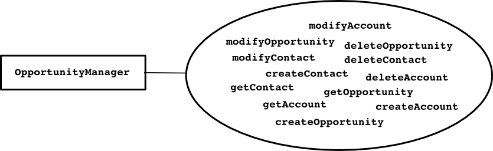
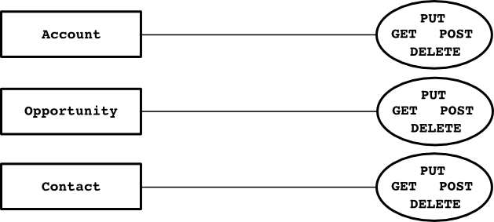

rest-tool
REST
MDD Patterns used in OOPS / The Repository pattern
A Repository
- acts as a storage place for globally accessible objects.
- sets up access through a well-known global interface.
- is a collection of aggregate roots.
- encapsulates all the logic needed to obtain object references.
- hide the details how to deal with the infrastructure layer
- provides methods to
- add and remove objects,
- select objects based on some criteria.
- returns fully instantiated objects or collections of objects.
- encapsulates the actual storage and query technology
- keep the client focused on the model, delegating all object storage and access to the Repositories.
What is REST?
Representational state transfer (REST) is a style of software architecture for distributed hypermedia systems such as the World Wide Web.
The term introduced and defined by Roy Fielding in his doctoral dissertation: http://www.ics.uci.edu/~fielding/pubs/dissertation/rest_arch_style.htm
By Fielding's PhD thesis, section 6.1 the name "Representational State Transfer" is intended to evoke an image of how a well-designed Web application behaves:
- a network of web pages (a virtual state-machine), where
- the user progresses through the application by selecting links (state transitions),
- resulting in the next page (representing the next state of the application)
- being transferred to the user and rendered for their use.
The key goals of REST:
- Scalability of component interactions
- Generality of interfaces
- Independent deployment of components
- Intermediary components to
- reduce latency,
- enforce security and
- encapsulate legacy systems
The constraints of REST:
An architecture that conforms to the following six constraints is generally referred to as being "RESTful":
- Client–server
- Stateless
- Cacheable
- Layered system
- Code on demand (optional)
- Uniform interface
RESTful web services (APIs)
A RESTful web service (also called a RESTful web API) is a simple web service implemented using HTTP and the principles of REST.
We can take it as a collection of resources that we can manipulate through the uniform interface, which provides:
- the base URI for the web service, such as http://sales.intranet.company.com/contacts/
- the hypertext driven API with four operations: GET, PUT, POST, or DELETE
- the representation of resources:
- can be any valid Internet media type.
- most often: JSON, XML or YAML
CouchDB as a RESTful document repository
The CouchDB server in principle is a JSON Repository with a RESTful API for managing the documents.
The four fundamental database management functions of a RESTful repository:
CRUD operation HTTP method
-------------- -----------
Create <--> POST
Retrieve <--> GET
Update <--> PUT
Delete <--> DELETE
Handling collections as resources
Sample collection URI (the set of contact documents): http://localhost:5984/contacts/
| Method | Function |
|---|---|
| GET | List the URIs and other details of the collection's members. |
| PUT | Replace the entire collection with another collection. |
| POST | Create a new entry in the collection. The new entry's URL is assigned automatically and is usually returned by the operation. |
| DELETE | Delete the entire collection. |
Handling individual documents as resources
Sample document URI (one contact document): http://localhost:5984/contacts/tombenke
| Method | Function |
|---|---|
| GET | Retrieve a representation of the addressed member of the collection, expressed in an appropriate Internet media type. |
| PUT | Replace the addressed member of the collection, or if it doesn't exist, create it. |
| POST | Treat the addressed member as a collection in its own right and create a new entry in it. |
| DELETE | Delete the addressed member of the collection. |
curl basics
We will use the curl to access to the CouchDB HTTP REST APIs from command line.
The curl is a command line utility for transferring data with URL syntax. Can be used --among others-- as a web client.
The most frequently used parameters are:
$ curl --help
Usage: curl [options...] <url>
Options: (H) means HTTP/HTTPS only, (F) means FTP only
-d/--data <data> HTTP POST data (H)
--data-ascii <data> HTTP POST ASCII data (H)
--data-binary <data> HTTP POST binary data (H)
--data-urlencode <name=data/name@filename> HTTP POST data url encoded (H)
-b/--cookie <name=string/file> Cookie string or file to read cookies from (H)
-c/--cookie-jar <file> Write cookies to this file after operation (H)
-G/--get Send the -d data with a HTTP GET (H)
-H/--header <line> Custom header to pass to server (H)
-X/--request <command> Specify request command to use
--url <URL> Set URL to work with
-u/--user <user[:password]> Set server user and password
-v/--verbose Make the operation more talkative
for example:
$ curl http://localhost:5984/
{"couchdb":"Welcome","version":"1.0.2"}
MDD Patterns used in OOPS / Services
Services
- represent an important behavior of the domain (actions, verbs).
- do not seem to belong to any object.
- are usually built on top of domain Entities and Values providing required functionality directly related to those objects.
- behave like scripts that organize the potential of the domain to actually get something done.
- are stateless
There are three characteristics of a Service:
(@) The operation performed by the Service refers to a domain concept which does not naturally belong to an Entity or Value Object. (@) The operation performed refers to other objects in the domain. (@) The operation is stateless.
DDD & REST
- The web is not our application's business domain
The web is the document management domain, \ it is a Document Management System.
Resources adapt the the business domain model for the web
- the resources are the documents, and
- the RESTful operations are the actions we can do with them.
The business domain: our application code hidden into resources and the services to manage them.
Operation oriented design
Single endpoint of operations (does not scale well)

Resource oriented design
- Aggregates can reference one-another (through URIs)
- Services may provide one source of aggregate roots on the web
- We can have any number of resources but only 4 methods

Consistency
There is no web-level total consistency
- Interaction with resources are stateless
- Race conditions are possible
The web provides coordination, our application is responsible for consistency
- Application that drive services keep resource-level aggregates consistent
- To avoid to put resources into inconsistent state use
- If-Unmodified-Since on a timestamp, or
- If-Match and an ETag
The steps to create resource oriented services
- Figure out the data set
- Split the data set into resources
For each kind of resource:
- Name the resources with URIs
- Expose a subset of the uniform interface
- Design the representation(s) accepted from the client
- Design the representation(s) served to the client
- Integrate this resource into existing resources, using hypermedia links and forms
- Consider the typical course of events: what’s supposed to happen?
- Consider error conditions: what might go wrong?
ExtJS intro
ExtJS (previously YUI-Ext) is a JavaScript library for building interactive web applications using techniques such as Ajax, DHTML and DOM scripting.
It was originally built as an add-on library extension of YUI by Jack Slocum in 2006.
ExtJS includes interoperability with jQuery and Prototype, but the latest version retains no dependencies on external libraries, instead making their use optional.
Sencha On 15 June 2010, the merger of Ext JS with JQTouch and Raphaël was announced forming a new organisation called Sencha Inc..
ExtJS is a main product of Sencha Inc., together with Sencha Touch, Ext GWT, Ext Designer, Sencha Animator and Ext Core.
It provides a dual licensing model:
- GPL
- Commercial with support
Resources you must read during development
The following links are inevitable to continuously keep open and study during learning and using ExtJS:
- The ExtJS product page
- ExtJS 4 - Examples (source code included)
- ExtJS 4 - API Documentation
- ExtJS 4 - Guides
The Model-View-Controller pattern of ExtJS
In ExtJS terminology the MVC means the following:
Models connect data to application functionality and UI components. They define application data along with their associations and validations. A model is a collection of fields and their data (e.g. a User model with username and password fields). \ Models
- know how to persist themselves through the data package, and
- can be linked to other models through associations.
- are normally used with Stores to present data into grids and other components
- Stores use proxies to communicate with the backend
A View is any type of visual component: grids, trees, panels, etc.
Controllers are special places to put all of the code that makes the application work whether that's rendering views, instantiating Models, or any other application logic, usually by responding to events. Controllers wire models and views together.
The cooperation among the MVC components of an application

The benefits of using the MVC conventions
Following the conventions unlocks a number of important benefits:
- Every application works the same way so it has to be learned only once
- It's easy to share code between applications because they all work the same way
- Build tools can be used to create optimized versions of applications for production use
- The application logic can be maintained in one place, but can be used through several ways (keyboard shortcuts, mouse, menu commands, etc.)
- There is a homogenous, holistic view on the model.
- Stores and proxies can hide the backends from the front-end logic and views.